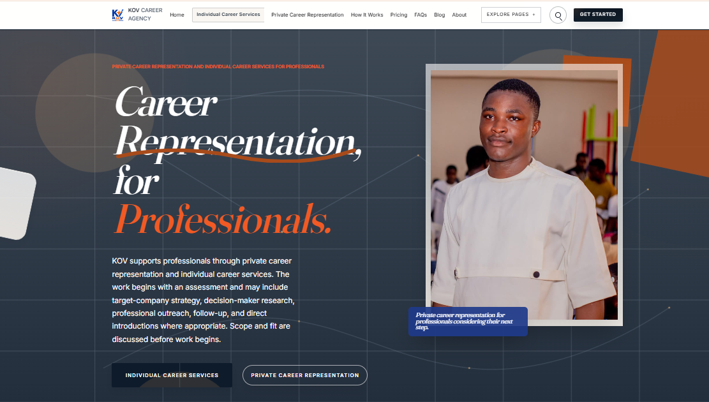

KOV Search, From Research to Conversation

Insights · Updates · Guidance
Perspectives on private career representation, professional outreach, and considered job-search strategy.

Lead with measurable results and scope of responsibility, keep the design clean, and tailor the top third of the page to the role you want.
Use a specific headline, a clear About section and consistent experience entries so your profile tells one coherent professional story.
Keep a cover letter short and specific: why this role, why this organisation, and the two or three results most relevant to it.
Start with people who know your work, ask for specific insight rather than a job, and follow up with something useful.
Send a short, specific message that states your target role, level and location, and attach a concise summary of your experience.
Research the person, show why your experience fits their team's needs, and keep the first message brief with one clear ask.
A courteous follow-up after about a week, adding one relevant point, is generally reasonable; avoid repeated messages.
Build a story bank of several examples with situation, action and result, and rehearse so they fit different questions.
Learn each panel member's role, prepare a story that suits each, and keep answers structured and concise.
Understand the full package, benchmark it against the market, and respond in writing with a clear, reasoned counter.
Ask how equity and bonus are structured, what the vesting or payment terms are, and how each is valued before comparing offers.
Identify transferable results, close the biggest gaps with evidence, and reposition your story for the new direction.
Take a short time to stabilise, set clear targets, update your materials and put a steady weekly routine around outreach.
Keep outreach private, avoid using work resources, and limit what is visible on your public profile.
Target employers that already hire remotely, highlight remote-ready habits, and check time-zone and right-to-work requirements.
Research each country's work-authorisation rules, adapt your CV to local conventions and target employers that hire internationally.
Many roles are filled through recruiter relationships and direct conversations, so targeted research and outreach matter.
Select a few projects that show your contribution, explain the context and your role, and show measurable results where possible.
Keep it simple: a biography, selected work, a short experience summary and clear contact details.
Set a specific goal, bring your materials and questions, and agree how progress will be reviewed.